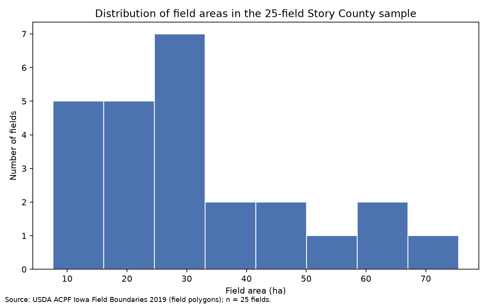
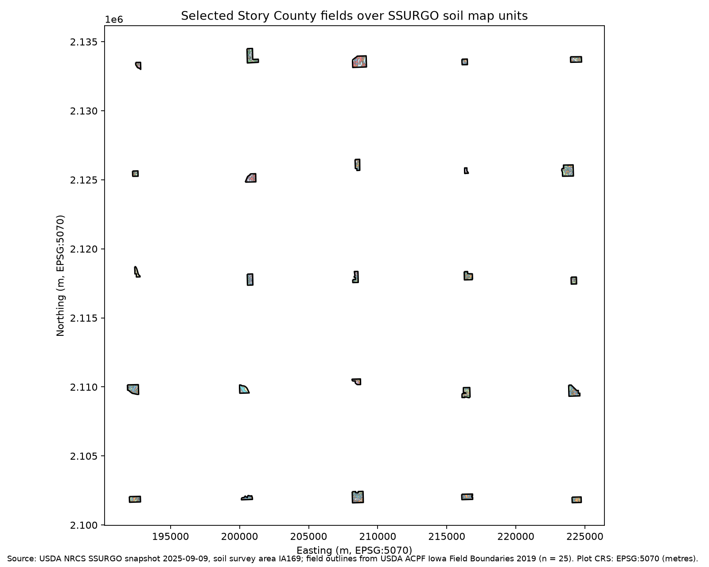
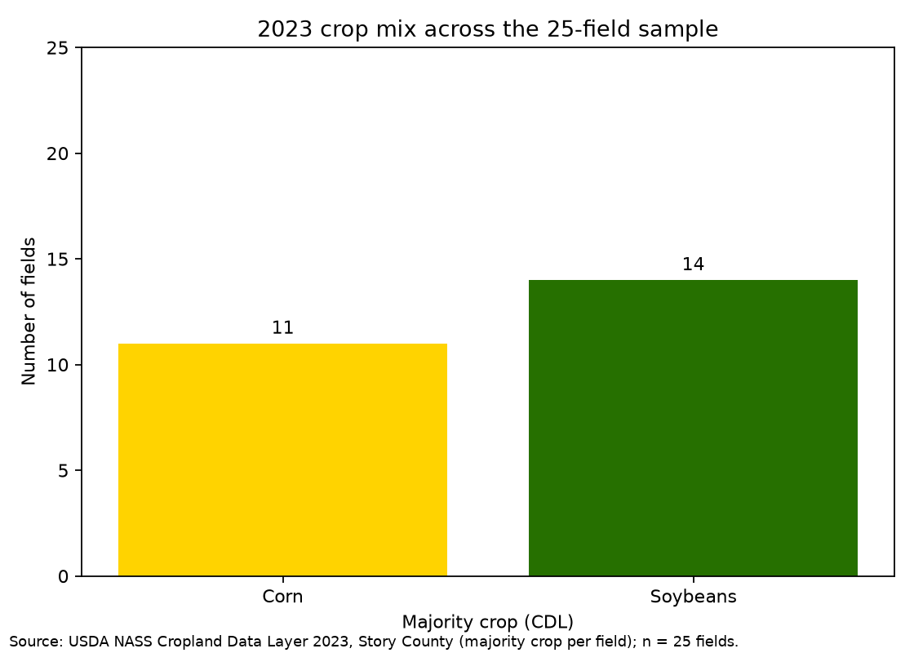
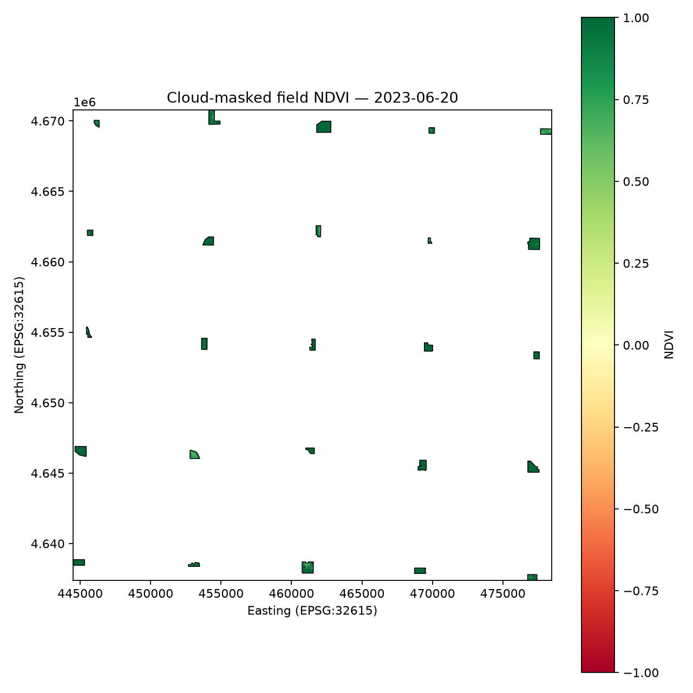
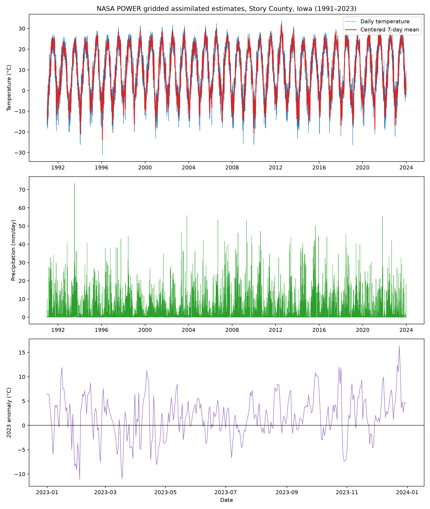
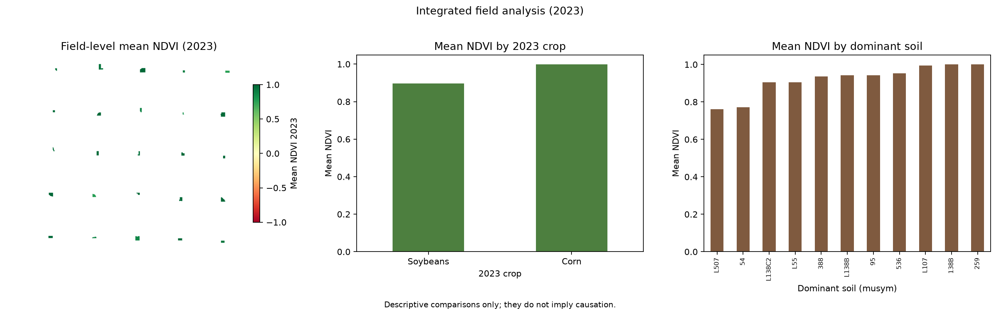
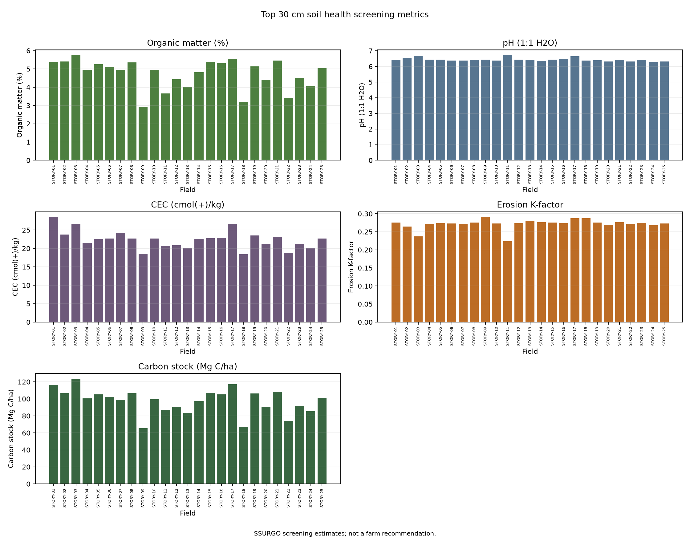

Key figures
Loading dashboard data…
- Field count — fields
- Total area — ha
- Dominant crop, 2023 —
- Mean NDVI — unitless (−1 to 1)
- NDVI coverage — % of field pixels
- Scene date —
- Temperature anomaly, 2023 — °C vs 1991–2020 baseline
- Precipitation, 2023 — mm
- Mean organic matter — %
- Mean pH — pH units
- Mean cation exchange capacity — cmol(+)/kg
- Mean carbon storage — Mg C/ha
Fields
Twenty-five ACPF field-analysis units in Story County, Iowa, drawn from USDA ARS Iowa Field Boundaries 2019.



Vegetation
Contains modified Copernicus Sentinel data 2023.

Weather

Integration

Soil

Methods
Data sources: U.S. Census TIGER/Line (Story County boundary), USDA ARS ACPF (Iowa Field Boundaries 2019), USDA NASS CDL (2020–2023 crop history), Copernicus Sentinel-2 Level-2A processed by Element 84 (one June 20, 2023 scene), NASA POWER (1991–2023 daily point estimates), and USDA NRCS SSURGO (IA169 snapshot dated 2025-09-09).
ACPF polygons are edited historical CLU-derived analysis units, not current ownership or program boundaries.
Limitations
- ACPF polygons are edited historical CLU-derived analysis units, not current ownership or program boundaries.
- NASA POWER values are single-point gridded assimilated estimates, not station observations.
- NDVI values clipped at 1.0 are ceiling values and not precise rankings.
- SSURGO soil and carbon values are generalized screening estimates, not measured field samples, operational erosion models, carbon-credit estimates, or farm recommendations.
- Per-metric SSURGO coverage varies; erosion K-factor has the least-complete coverage.
Provenance
- U.S. Census Bureau — TIGER/Line Story County boundary.
- USDA ARS ACPF — Iowa Field Boundaries 2019.
- USDA NASS CDL — Story County crop history, 2020–2023.
- Copernicus Sentinel-2 Level-2A, processed by Element 84 — scene dated June 20, 2023. Contains modified Copernicus Sentinel data 2023.
- NASA POWER — daily point estimates, 1991–2023.
- USDA NRCS SSURGO — IA169 snapshot dated 2025-09-09.